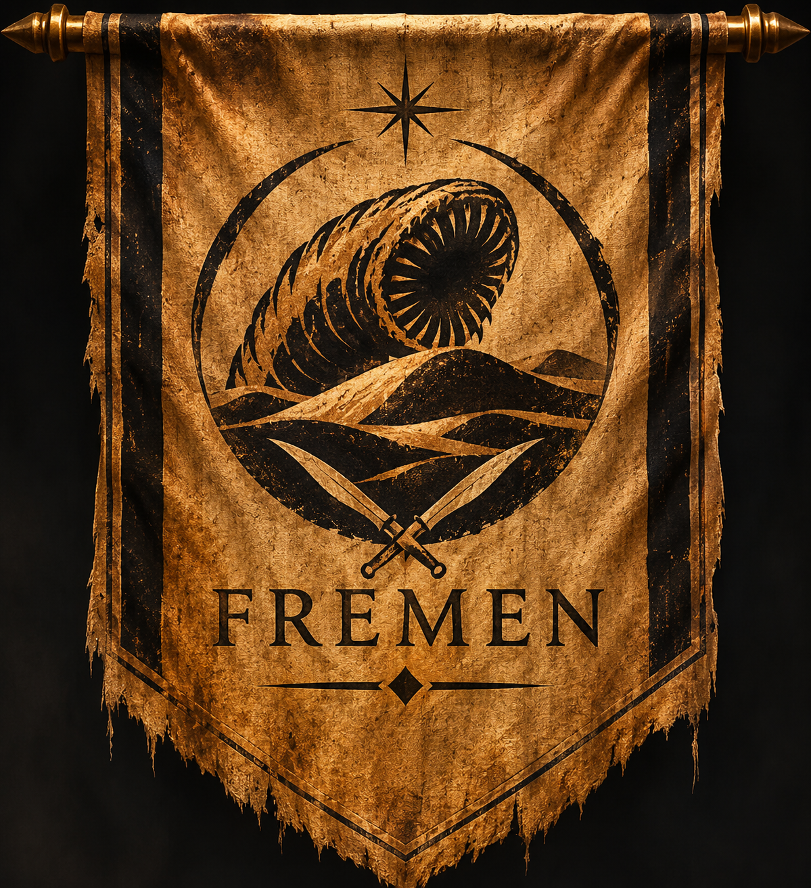

Explora las ocho casas y linajes recogidos en este archivo, desde las tres grandes casas centrales de Dune hasta los linajes de presencia más limitada, y su legado a lo largo de las seis novelas originales de Frank Herbert. Las fichas contienen spoilers. Se distinguen casas mayores y linajes citados en las novelas originales. Las insignias son interpretaciones editoriales, no emblemas oficiales.

Pueblos de Arrakis · No es una Gran Casa
Los Fremen
El pueblo del desierto: sietch, naibs, cultura del agua y su papel decisivo en las seis novelas originales de Dune.
Explora sus protagonistas
Las alianzas y rivalidades cobran vida a través de sus personajes.